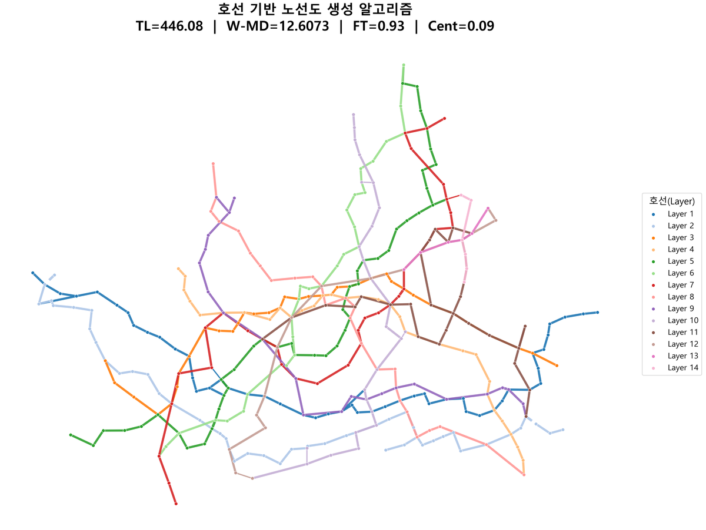
그래프 위상 구조를 중심으로 — 세 가지 알고리즘 비교 분석
도시 철도망 설계를 순수 수학·알고리즘으로 접근합니다. 서로 다른 위상학적 방법론을 가진 세 가지 알고리즘을 서울시 403개 역 데이터와 Mumford3 벤치마크 네트워크에 적용·비교 분석하고, 경제성(TL)과 신뢰성(FT, λ₂) 사이의 균형점을 정량적으로 탐색합니다.
황색망사점균(Physarum polycephalum)의 먹이 탐지 행동을 수학적으로 모델링합니다.
점균류는 두 먹이 소스 사이에 놓이면 관(管)을 통해 유체를 흐르게 하고, 흐름이 많은 관은 확장하고 흐름이 없는 관은 수축시키는 적응 능력을 보입니다. 이 메커니즘을 하겐-푸아죄유 법칙으로 수치화합니다.
각 역사 노드를 델로네 삼각분할로 연결한 초기 메쉬에서 출발하여, 반복 연산을 통해 불필요한 간선을 도태시키고 핵심 경로만 남깁니다.
γ=1.0을 임계값으로 야코비안 행렬 분석을 통해 네트워크 붕괴 조건을 수학적으로 증명
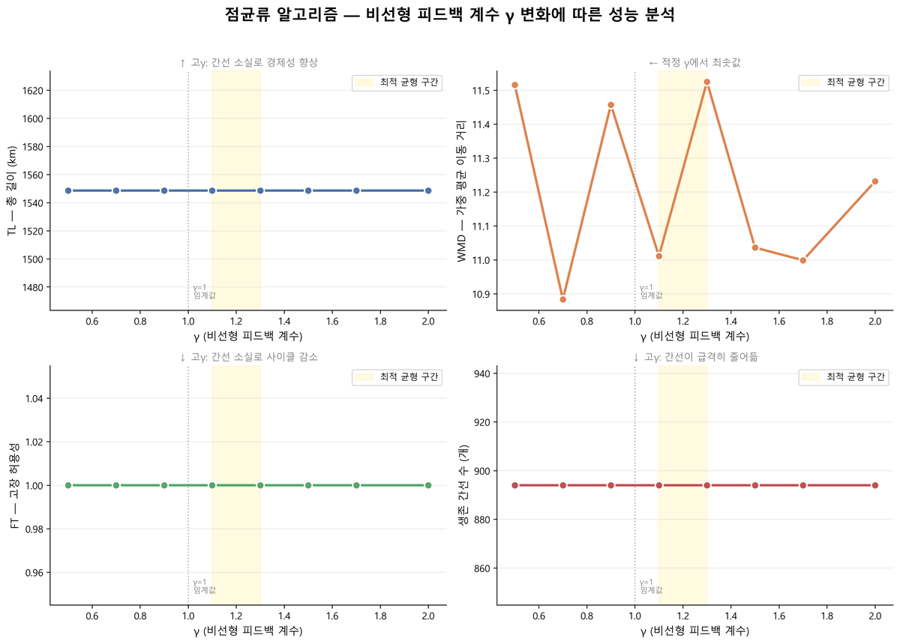
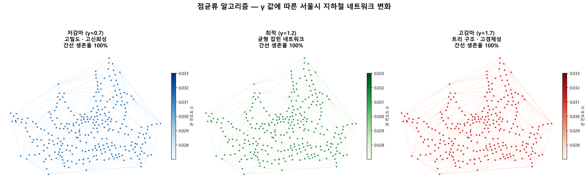
상충하는 세 가지 목적함수를 동시에 만족하는 파레토 최적해 집합을 진화적으로 탐색합니다.
노선도를 이진 염색체(간선 존재 여부)로 인코딩합니다. 교차·변이 연산을 통해 세대를 반복 진화시키며, 비지배 정렬과 Crowding Distance로 파레토 프론트 다양성을 유지합니다.
단일 최적해가 아닌 50개의 균형 잡힌 해 집합을 도출하여, 도시 계획가가 예산·안전 요구에 따라 적절한 해를 선택할 수 있는 의사결정 공간을 제공합니다.
파레토 프론트 상의 해들은 단일 목적 최적화로는 도달 불가능한 균형 구조
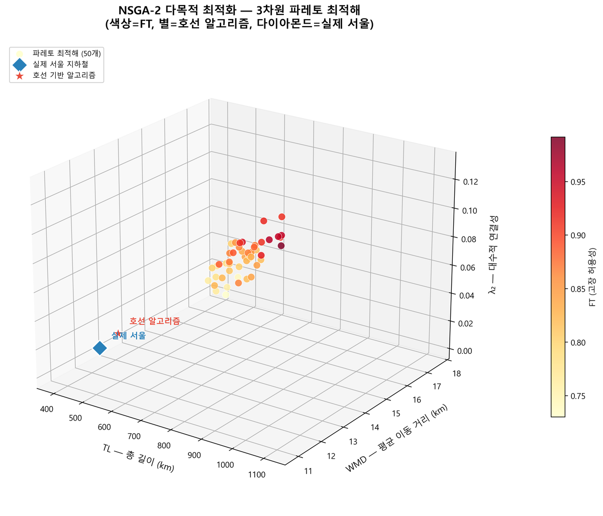
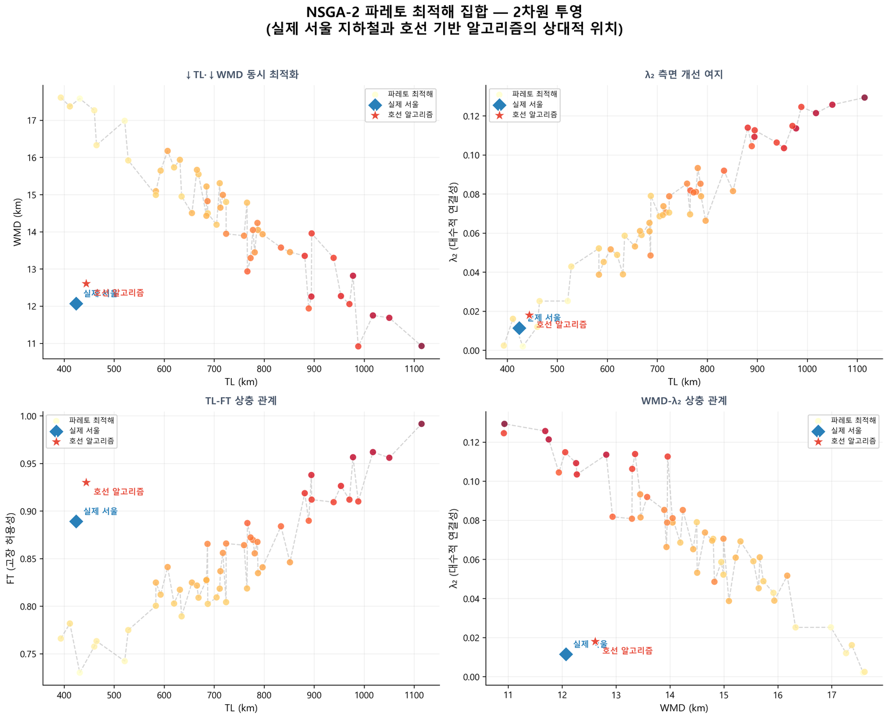
결정론적 8단계 프로세스로 호선 구조를 명시적으로 생성합니다. 동일 입력에 항상 동일 결과를 보장합니다.
재귀적 볼록 껍질(Quickhull) 박피로 외곽에서 내부로 호선을 단계적으로 생성합니다. 각 층의 최원거리 두 역을 종점으로 하는 가중치 d³ 다익스트라 경로가 호선의 골격이 됩니다.
이후 단절 파편 흡수, 재귀 봉합, MST 환승, 사잇각 기반 지름길 편입을 거쳐 실제 지하철망과 유사한 유기적 위상 구조를 도출합니다.
TL·WMD 소폭 증가는 외곽 우회 노선 확보에 기인하며, 이것이 오히려 강건성을 끌어올림
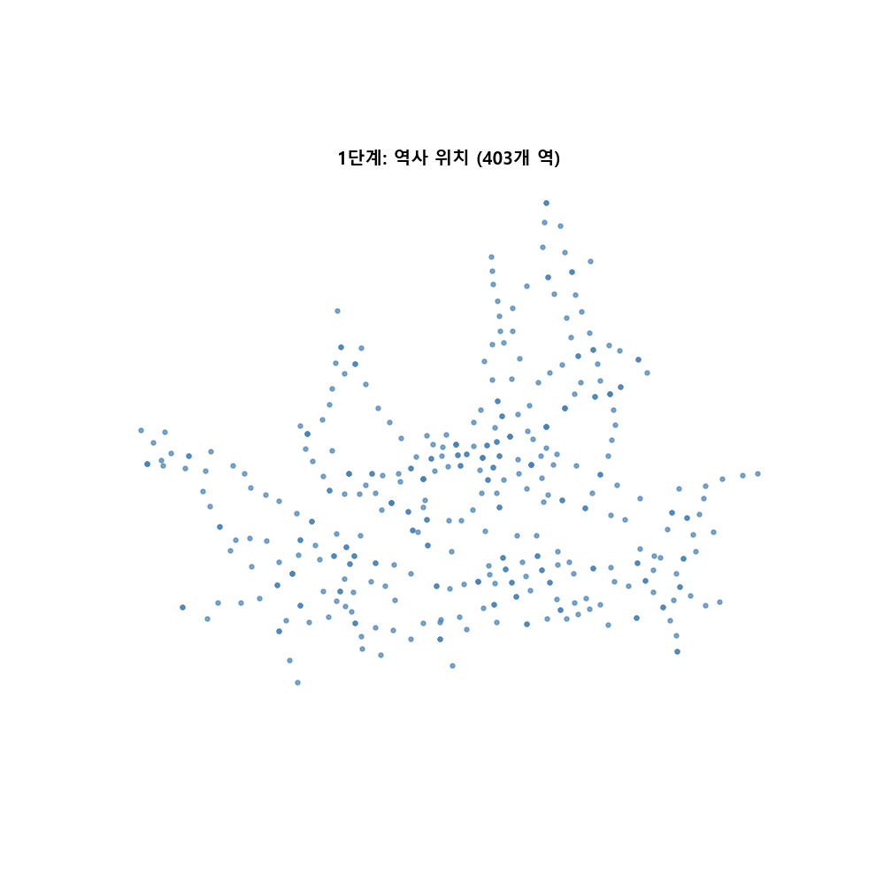
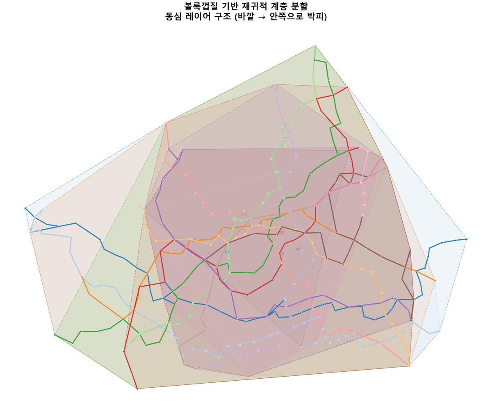
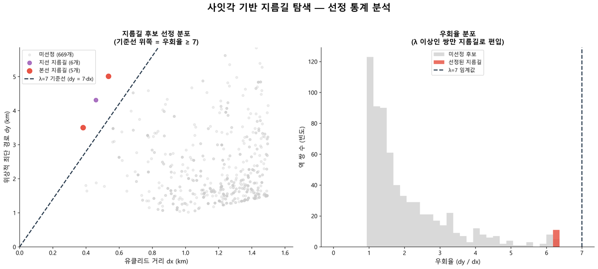
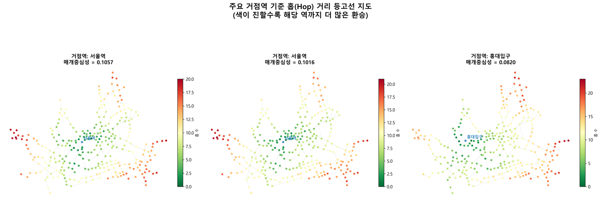
서울시 지하철 적용 결과를 실제 서울 지하철과 함께 비교합니다.
| 알고리즘 | TL (km) | WMD (km) | FT | 특징 |
|---|---|---|---|---|
| 실제 서울 지하철 | 423.93 | 12.07 | 0.889 | 참조 기준 |
| 🧫 점균류 알고리즘 | >4000 | ~10 | >0.93 | 최고 신뢰성 |
| 🧬 NSGA-2 (최적해) | 다양 | 다양 | 다양 | 파레토 50개 해 |
| 🗺️ 호선 기반 알고리즘 | 444.08 | 12.61 | 0.930 | 균형 최적 |
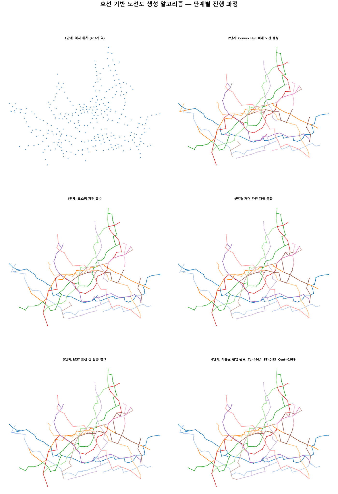
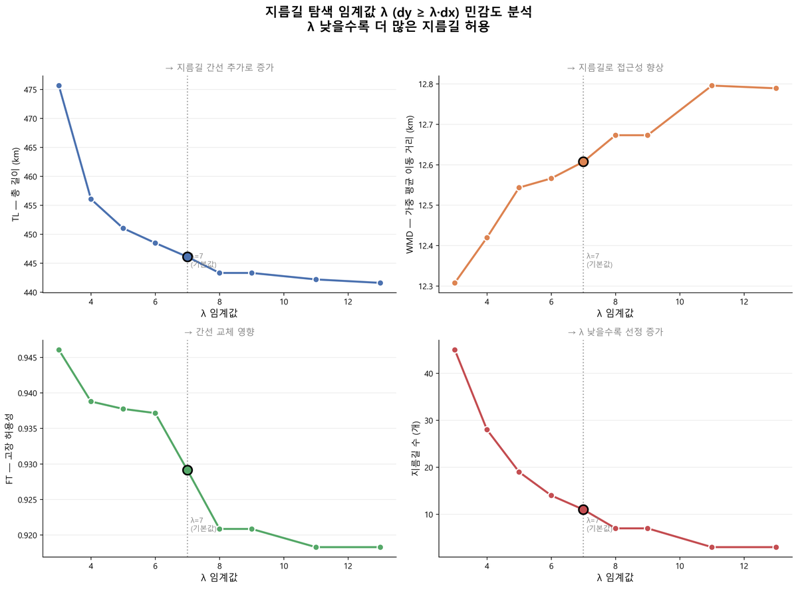
FT·λ₂ 측면에서 가장 우수하지만 TL이 실제 대비 10배 이상으로 경제성이 낮습니다. 수학적 분석으로 γ=1.0 임계값에서 네트워크 붕괴가 발생함을 야코비안 행렬로 증명했습니다. 실제 데이터에서의 임계값 편차는 간선 수에 따른 상호작용 지연으로 해석됩니다.
TL·WMD·λ₂ 상충 관계를 파레토 최적해 집합으로 균형화합니다. 실제 서울 지하철을 최적해 공간에 투영하면 효율성은 준수하나 λ₂(강건성) 측면에서 개선 여지가 확인됩니다. 설계자에게 예산·안전 수준에 맞는 정량적 의사결정 공간을 제공합니다.
결정론적 설계로 재현성을 보장합니다. TL·WMD의 소폭 증가에도 FT 향상 + Cent 50% 감소를 달성합니다. 강남·잠실 등 소수 환승역 장애 시 전역 붕괴를 막는 강건성을 확보합니다. λ 조정으로 경제성-신뢰성 맞춤 설계가 가능합니다.